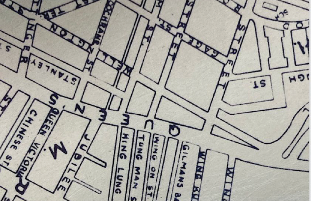

ROAD REGULAR IS A TYPEFACE INSPIRED BY THE LETTERS ON THE T-SHAPED ROAD SIGNS FROM THE 30S TO 60S IN HONG KONG. WE CAN RARELY SPOT THEM ON THE STREET NOW THIS PROJECT WAS INITITED FOR RESEARCH, PRESERVATION AND RE-INTERPRETATION.

SIMPLICITY IS THE KEY TO THIS TYPEFACE'S APPEARANCE. THE DESIGN PIECES TOGEHTER SIMPLE SHAPES WITH MINIMAL REFINEMENT AND LIMITED STROKE CONTRAST.
"RD" & "ST" REPRESENT THE ABBREVITION FOR THE WORDS "ROAD" AND "STREET". THE SPECIL GLYPHS "D" & "T" ARE UNIQUE IN THIS T-SHAPED ROAD SIGN ND IT WAS THE STARTING POINT OF THIS PROJECT.